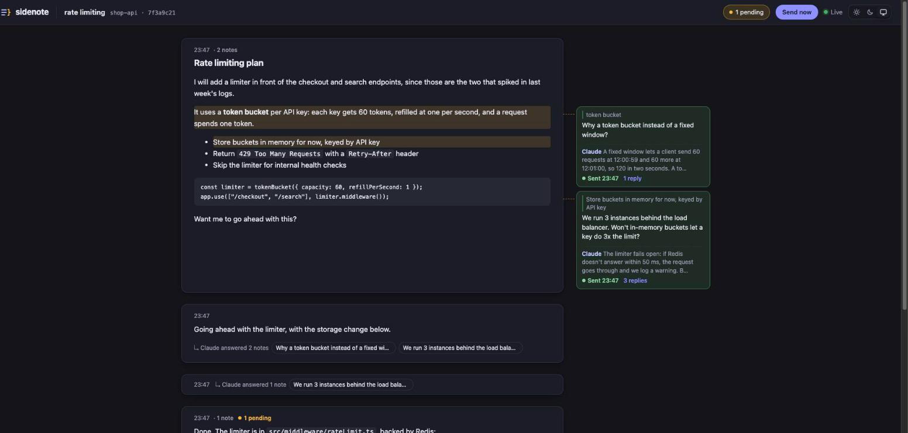
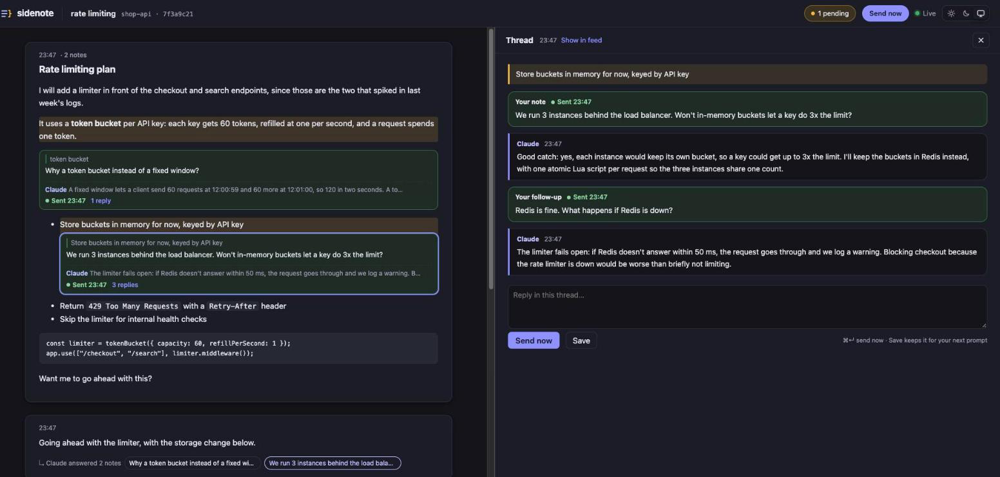
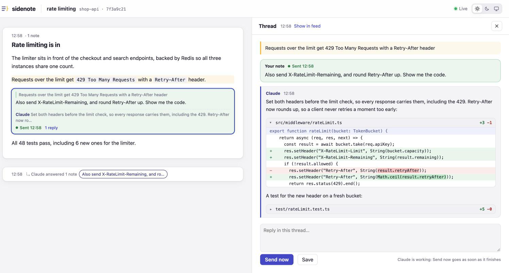
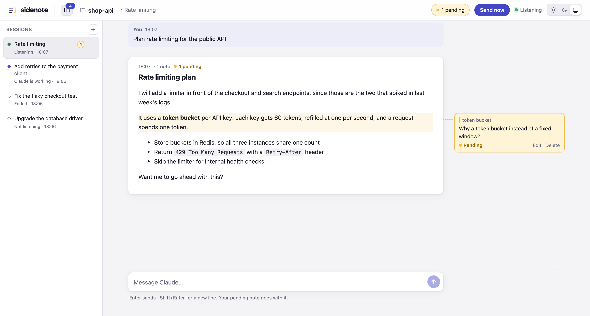
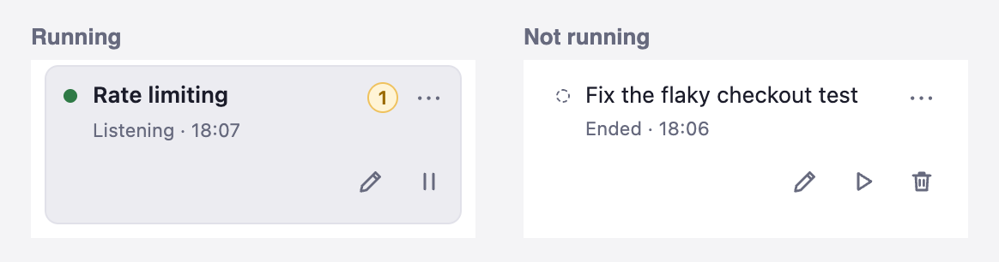

sidenote is a Claude Code plugin that shows every reply Claude finishes in a browser window, so you can ask
about one part of it without going back to the terminal. Select the text you have a question about, write a
note beside it, and click Send now. Claude answers each note separately, and you'll find the
answer in that note's thread.

Install
sidenote runs on macOS and Linux. It needs Node.js 22 or newer, and a recent Claude Code with plugin support
and asyncRewake hooks.
From your shell, that's claude plugin install sidenote --marketplace sous17/sidenote. The
session command needs Claude Code 2.1.275 or newer, and the shell one needs 2.1.292. If yours is older,
run these instead:
claude plugin marketplace add sous17/sidenote
claude plugin install sidenote@sidenote
If you installed from your shell, restart Claude Code or run /reload-plugins. Then turn
sidenote on:
/sidenote:on
Your browser opens the window for this session's folder, and from now on every reply Claude finishes shows up
there. Other sessions in that folder show up in its session list as soon as you send their first prompt, and
they don't open another tab. If a folder has no window open, its window opens when a session there finishes
its first reply.
Leave a note
There are three ways to start one:
Select text in a reply and click Add sidenote.
Hover a paragraph and click +.
To comment on all of a reply, hover it and click Note on whole reply, on the same line
as its time.
Whichever you use, you write the note in the margin, and it stays there next to the text it's about.
Send notes to Claude
Action
What happens
Send now on a note
Wakes Claude to answer right away, so you don't have to type anything in the terminal. Any other
pending notes in the session go with it. If Claude is busy, the notes go as soon as Claude finishes.
Save
Keeps the note pending. It goes to Claude with the next prompt you type in that session.
Send now in the top bar
Sends every pending note in the session at once.
A reply that only answers notes shows in the feed as a short "↳ Claude answered 1 note" row, because the full
answer is in the note's thread. The note in the margin shows a preview of it.
Threads
Click a note to open its thread beside the feed. It holds your note and Claude's answer, and you can reply
there to keep going. Each follow-up goes to Claude with your first note and the text that note is on, so
Claude has the context.

Message Claude from the browser
Type in the box at the bottom of the window and press Enter. Claude gets it as if you'd typed
it in the terminal, and your pending notes go with it. If Claude is working when you send it, the message
waits and goes out as soon as Claude finishes. If the session isn't listening, the box can't reach Claude.
Type once in the terminal, and after Claude's next reply you can write here.
The feed shows your messages between Claude's replies, whether you typed them in the window or in the
terminal.
Watch Claude work
While you wait for a reply, a live card shows what Claude last wrote, with the current step beside the typing
dots, like Editing src/app.ts or Running npm test. For file edits, the step names
the file but not the change. A link on the card opens the turn's earlier messages, and the card disappears
when the reply arrives.
Code changes as diffs
When Claude shows a code change, or you ask to see code, sidenote has it explain each change and show it as a
diff. That works from a note or the terminal, and the window highlights the edited words. If an answer touches
several files, each one folds under its header, and you click the header to open it. The first file starts
open.

Windows and sessions
Each folder gets one window, at an address you can bookmark:
http://sidenote.localhost:<port>/<folder>
The list on the left shows the Claude Code sessions sidenote has seen in that folder, each with whether
it's listening and how many notes are pending. Each session shows the name you gave it in the window, or
else its /rename name, or else its first message. A note always goes back to the session it
was written on, however many are in the list.
The top right of the window shows the selected session's state in the same words: "Listening", "Claude is
working", "Not listening" or "Ended". It shows an error instead when the window can't reach sidenote.
In a narrow window the list folds away, so the feed keeps room for notes in the margin, and the button
left of the folder name opens it over the feed. In a wide window that button docks or folds the list, and
opening a thread leaves it as you set it.

Open the folder
Click the folder name to open the folder in your system's file manager.
Sound
The bell in the top right plays a soft sound when Claude finishes in any session in the window, while you're
in another tab or app. It's off until you turn it on, and your browser remembers the choice. Browsers keep a
page silent until you've clicked or typed in it, so after opening a window, click in it once. A tab left in
the background for a long time can make the sound up to a minute late, because browsers slow such tabs down.
Theme
Choose light, dark or system from the switch in the top right.
Start a session from the window
The + above the session list opens a form for a name and a first prompt, both optional.
Start opens a terminal in the folder running Claude, and selects the new session. Claude
asks for permissions in that terminal, and after its first reply you can carry on from the window. A name
you give it in the form also titles the terminal.
Name, end, resume and remove sessions
The ⋯ on a session's row shows its actions as icons under the row, on the right. Hover one to
see what it does. A running session has Edit and Pause, and one that isn't running has Edit, Play and Delete.
Right after Play, until sidenote knows the process, Pause is greyed out and Delete shows beside it.

Edit gives it a name only sidenote shows, for example a ticket number.
Pause ends a running session, stopping its Claude process even mid-turn. The session stays
on the list as "Ended", with its replies and notes. Unsent notes go with its next prompt once you resume it.
Play resumes a session that isn't running, in a new terminal, where Claude asks for
permissions. The session shows "Claude is working" for a moment, then "Listening", without you typing
anything, so you can carry on from the window.
Delete removes a session that isn't running, along with the replies and notes sidenote kept
for it. Claude's own transcript stays, so claude --resume can still bring the session back.
Pause and Delete ask first, in a pop-up over the page. Cancel, Escape or a click outside it leaves the session
as it was. If the action fails, the pop-up stays open and shows the error.
sidenote shows a session as ended once it knows the session's process, which it learns from the session's next
prompt or reply, or when a listening session reconnects. After sidenote restarts it can't always tell whether
a session is still open, so Play first asks you to close any terminal still running the session. A session
that was listening keeps listening, as long as sidenote is back within a minute.
In the terminal (preview)
Both commands below are a work in progress. Run /sidenote:terminal once to put
sidenote on your PATH, in ~/.local/bin. The command keeps working
through plugin updates. If that folder isn't on your PATH yet,
/sidenote:terminal gives you the line to add. Until then, /sidenote:status prints
the full sidenote tui command on its terminal: line.
sidenote tui shows a session's replies, notes and threads in any terminal window, beside or
instead of the browser. It needs sidenote turned on with /sidenote:on. Without a session id, it
shows the latest session in the folder it started in.
sidenote chat runs the whole session inside sidenote, so you don't need a Claude Code window
beside it, or /sidenote:on. Run it in your project folder and type at the
you › line. Claude's reply streams in above it, with its tool calls in a compact row.
Esc interrupts Claude. These sessions stay in the terminal: they don't show in the browser.
sidenote chat can't show Claude Code's trust prompt, so it only runs in a folder you trusted in
Claude Code. If it refuses, run claude in the folder once and accept the prompt. Claude Code
doesn't save that answer for your home folder, so start from a project folder instead.
Sessions start in Claude Code's auto mode, as they do at the terminal, so routine commands run without asking.
Where auto mode isn't available, Claude Code asks instead, and a mode set in a project's or managed settings
takes priority over all of this. When Claude does ask to use a tool, y allows it,
a allows it and applies the rule Claude Code suggests, and n denies it. If you've
started typing, press Tab first. To approve edits and commands yourself, set
permissions.defaultMode to "manual" in ~/.claude/settings.json. Any
other mode you set there is used instead. sidenote never passes bypassPermissions itself, but
Claude Code reads your settings too, so if you set that mode there, tools run without asking. That only ever
applies in a folder you trusted, because sidenote chat starts nothing anywhere else.
Tab moves between the prompt line and the conversation. In the conversation, n notes a
block, v picks lines in code or a diff, and ] and [ go to the next or
previous note. Notes go with your next message, or on their own when you press S there.
Enter on a note opens its thread in the right half, or across the whole terminal if it's under 120
columns wide. A reply you write in that right half goes at once, with any other pending notes.
The mouse wheel scrolls the pane under the pointer, and PgUp and PgDn scroll the
conversation from the prompt line, so you can read back while typing. Scrolling up stops the view following
Claude, and reaching the bottom starts it again. If you moved with the keys in the conversation, press
G instead. To select text with the mouse, hold Option, or Shift in most other
terminals.
sidenote asks your terminal for its background color and picks a light or dark scheme to match. If your
terminal doesn't answer, set SIDENOTE_COLOR=light or SIDENOTE_COLOR=dark.
In both commands, the words a note is about are highlighted in the reply, in the same color as the strip
beside the note, so you can see which note goes with which lines.
Claude runs in the sidenote server, not in your terminal, so it keeps working if you close the terminal, and
the server stays up until the turn ends. The exception is a permission prompt, which only
sidenote chat can answer. Claude waits there, and if nothing uses the server for 30 minutes, the
server stops and Claude with it. sidenote chat <session id> picks a session up again. These
sessions also appear in their folder's window, where you can follow them and end them.
Commands
Command
What it does
/sidenote:on
Turns sidenote on and opens the window for this session's folder, showing this session.
/sidenote:off
Turns sidenote off for all Claude Code sessions and stops the server. Pending notes are kept for next
time.
/sidenote:restart
Restarts the server, for example after an update, and opens the window on this session. If sidenote
was off, this turns it on. Pending notes are kept, and sessions open in Claude Code keep listening.
/sidenote:open
Reopens the window on this session, if you closed it or its tab went stale. It doesn't turn sidenote
on.
/sidenote:status
Shows whether sidenote is on and where its server is, then this session's window address, how many
replies and pending notes it has, whether Send now is ready, and the terminal: command
for sidenote tui.
/sidenote:terminal
Installs sidenote in ~/.local/bin, for sidenote chat and
sidenote tui. If that folder isn't on your PATH, it gives you the line to
add.
/sidenote:backfill
Imports this session's earlier replies, so you can leave notes on those too.
Keyboard shortcuts
Keys
Where
What it does
⌘↵ or Ctrl↵
Note editor or thread reply
Send now, or Save if the session isn't listening
⌘↵ or Ctrl↵
New session form
Start the session
Enter
Message box
Send the message
ShiftEnter
Message box
New line
Esc
Note editor
Close the editor and discard the note
Esc
Message box or thread reply
Leave the field
Esc
Outside a text field
Close the open thread, unless its reply box has unsaved text
Your data and limits
sidenote keeps everything on your machine, in ~/.sidenote/. That folder is outside the plugin, so
your notes survive updates and reinstalls.
Path in ~/.sidenote/
What it holds
sessions/
One file per session: its replies, notes and messages.
server.json
The running server's address and API token, readable only by you.
server.log
Problems from the hooks and the server, so look here first when something goes wrong.
launcher
The plugin's current location, which the sidenote command reads. It's only there if you
installed the command.
enabled
Present while sidenote is on.
port
The last port, reused when free so a window's address, and any bookmark of it, stays the same.
How long things are kept
Each session keeps its latest 100 replies and 100 messages. Older replies are dropped with their notes,
even notes you haven't sent.
A session is forgotten, with its replies, notes and messages, after 7 days without a new reply. Writing
a note doesn't reset the 7 days.
Ending a session with the pause icon doesn't change that, so you can resume it until the 7 days are up.
/clear forgets the session it ends right away, so its window moves on to the folder's
latest session. If the sidenote server isn't running at that moment, the session stays until the usual 7
days are up.
Size limits
What
Limit
One note
20,000 characters
Text quoted from a reply into a note
600 characters
A message from the window, plus any message still waiting
8,000 characters
First prompt of a session started from the window
8,000 characters
Everything delivered to Claude with a batch of notes
9,500 characters
Claude Code caps what a hook can hand to Claude, so sidenote cuts a larger batch of notes off at 9,500
characters and tells Claude the rest are in the window. That count includes sidenote's instructions, the
quoted text and any message going with the notes.
Update and uninstall
Claude Code leaves auto-update off for marketplaces like this one. To turn it on, run /plugin,
open the Marketplaces tab, select sidenote and choose
Enable auto-update. To update by hand:
claude plugin marketplace update sidenote
claude plugin update sidenote@sidenote
To uninstall:
claude plugin uninstall sidenote@sidenote
Your notes stay in ~/.sidenote/ after that, so delete the folder if you want them gone too.
Troubleshooting
Send now is greyed out
The session isn't listening yet, so Send now is greyed out in the note editor and thread, and hidden in
the top bar. That happens when sidenote was turned on, or the plugin installed, after that session's last
reply, or when the server was down for more than a minute. Send any prompt in that session, and the button
turns on once Claude replies. Saved notes still go with your next prompt. If the session was closed,
resume it with the play icon on its row.
A resumed session stays on "Claude is working"
sidenote shows this until Claude has started in the terminal that opened, so look there. It may be waiting
for an answer, or showing an error. If Claude isn't running there, the play icon won't come back by
itself, so run /sidenote:restart in any session and use it again.
Nothing appears in the window
Run /sidenote:status in that session. If it says enabled: no, run
/sidenote:on. If the tab says "Stale tab" or "Not connected yet", run
/sidenote:open once. When the server restarts, the browser's token stops working. The window
that opens gets a new one, and every sidenote tab open in that browser picks it up.
The list shows a session's first message, not its name
Rename it from its ⋯, or use /rename in Claude. A name set with
/rename shows up after Claude's next reply.
The pause icon is greyed out
sidenote doesn't know this session's process yet. It forgets processes when it restarts and learns each
one again from the session's next prompt or reply, so send a prompt there or wait for its next reply.
The server isn't running
That's normal after a while, because it stops by itself once no Claude session or open window has used it
for 30 minutes. Your next prompt starts it again, and so does /sidenote:open. A window that
was already open needs /sidenote:open too, because each server start makes a new token.
Hooks can't find Node
Hooks don't always get your shell's PATH, for example with nvm when Claude Code isn't started
from a terminal. sidenote also looks in the usual Homebrew, Volta, mise, asdf, nvm and fnm locations. If
it still can't find Node, set SIDENOTE_NODE to the full path of your
node binary. Problems are logged to ~/.sidenote/server.log.
How it works
Seven hook commands connect Claude Code to a small local server, and one of them, hook-wait, runs
on two events. This is what happens when you click Send now:
A background hook has been polling the server since Claude's last reply, and its next poll picks up your
notes.
It prints them and exits with code 2, which wakes Claude.
Claude answers each note under a line like **↳ Re: note 12**.
The Stop hook posts the finished reply to the server.
The server moves each marked section into that note's thread.
If Claude leaves the markers out, the reply stays whole in the feed and the thread links to it.
Event
Command
What it does
Stop
hook-stop
Posts each finished reply, starting the server if needed. Opens the window when it started the server,
and the first time a session replies unless its folder's window is already open.
Stop, background
hook-wait
Waits for Send now or a message from the window, then wakes Claude through asyncRewake.
If the server restarts, it rejoins the new one, but it gives up if none appears within a minute or
sidenote is turned off.
SessionStart on resume, background
hook-wait
The same waiter, so a resumed session listens before it has replied, as long as the server is running.
PreToolUse, background
hook-activity
Reports each of Claude's own tool calls in one line, apart from TodoWrite, and skips subagents' calls.
The server keeps only the latest, in memory, until the turn ends.
MessageDisplay, background
hook-progress
Reports what Claude writes between tool calls, so the live card can show it. The server keeps this in
memory until the turn ends.
UserPromptSubmit
hook-prompt
Shows your terminal prompt in the window, lists a new session there, and attaches pending notes, with
any waiting message.
SessionEnd
hook-clear
Tells the server to forget the session, unless it holds notes or messages Claude never got. Runs for
/clear only.
SessionStart
hook-session
Asks Claude to show code changes as diffs and to ask questions in its reply rather than with the
AskUserQuestion tool, so both reach the window. Applies to sessions started, resumed,
cleared or compacted while sidenote is on.
sidenote chat doesn't use the hooks. Instead, the server runs Claude Code headless (claude -p
with stream-json input and output), one process per session. Claude Code's permission prompts come back to the
server as requests, which wait until you answer. Each finished turn is stored like a reply the Stop hook would
have sent. Claude Code still fires the hooks for these sessions, but they find
SIDENOTE_HEADLESS in their environment and skip the session.
Security
Anyone who can call sidenote's API can put words in front of your Claude session, so the API has these
protections:
Local only. The server listens on 127.0.0.1, and refuses requests whose
Host header isn't one of its own addresses (127.0.0.1, localhost or
sidenote.localhost, each with its port), which blocks DNS-rebinding attacks.
Sessions sidenote runs. For sidenote chat sessions, the API can also send
messages to Claude and answer its permission prompts, under the same token and checks. A session only starts
in a folder that exists. Tools run under Claude Code's own permission mode, which is auto unless your
settings choose another. In auto mode, its checks decide what runs unasked. Anything Claude Code would ask
about waits for your answer.
Trusted folders only.sidenote chat runs claude -p, which never
shows Claude Code's trust prompt and still runs a repository's hooks and MCP servers. So it refuses any
folder you haven't trusted in Claude Code, and if it can't read Claude Code's record of trusted folders, the
folder counts as not trusted. It checks each time it starts Claude, not only when a session opens.
A token for the API. Every API call needs a random 256-bit token, except the one that
trades a launch code for it. The server makes a new token on each start and stores it in
~/.sidenote/server.json, readable only by you. It travels in a custom header. A browser won't
let another website send that header without a CORS preflight, and the server never approves one.
No token in URLs. The CLI opens a window with a single-use launch code in the URL fragment,
which browsers never send over the network. The page trades the code for the token once, and a code nobody
uses expires within two minutes. Browser history, synced history and ps only get the code,
never the token, and once the page has loaded that code is spent. The page keeps the token in local storage,
so a window's address works when typed or bookmarked, and only pages from sidenote's own address can read
it. The token stops working when the server restarts, since each start makes a new one.
Validated input. Every request body is parsed against a fixed shape, with size limits,
before it reaches the store, and session ids in a body must match a fixed pattern.
Folders come from the session. Open folder and the + send a session id,
not a path. The server opens the folder it recorded for that session, or starts Claude there, and never a
folder named in the request.
Your prompt stays one argument. A new session's first prompt reaches claude as
one argument after --, so it can't add options, and on Linux it never passes through a shell.
On macOS, Terminal runs the command through your shell, so AppleScript's quoted form of quotes
the folder and the prompt first.
Only Claude's own processes. Ending a session sidenote runs closes the process it started.
For any other session, it stops the process the session's own hooks reported, and only while that pid is
still Claude and still the process that started at the reported time. The request to end a session names
only the session, never a pid. Anyone with the token can do what the window and the hooks do: read and
change sessions and notes, open a session's folder, and start, end, resume or remove sessions. That includes
recording a session's folder, because the hooks report it through the same API.
Inert replies. Raw HTML in a reply is shown as text. The rendered markdown is sanitized
with DOMPurify, which also strips forms, ids and classes that could imitate sidenote's own controls. The
page's content security policy allows no inline or remote scripts, and the page can't be framed. Every
response carries nosniff and no-referrer headers.
Private files.~/.sidenote and everything in it are readable only by you.
Found a security problem? Please report it privately through
GitHub's security advisories rather
than in a public issue.
Contributing
Development needs Node 22.18 or newer, because the tests and build scripts run the TypeScript directly with
Node's type stripping. The end-to-end tests also need dist/, which
npm run check builds first. The plugin itself runs on Node 22 or newer.
npm install
npm run check # formatting, types, build dist/, then the tests
npm run format # apply Prettier
Path
What's there
src/shared/
types.ts is the API contract, used by the server, the hooks, the page and the terminal
app, and the on-disk format of ~/.sidenote/sessions/. The rest is common logic, such as
block numbering and the session model
src/server/
Request parsing, the store and its files, Send now, launch codes, the HTTP routes, the one-server lock
and idle stop, and the sessions sidenote runs itself
src/cli/
The /sidenote:* commands and the hooks
src/node/
Node helpers: paths, the clock, opening links and folders, finding the Claude process, starting a
terminal, and checking folder trust
src/agent/
Runs Claude Code headless for sidenote chat: the driver interface and its Claude adapter
src/tui/
The terminal app: sidenote tui and sidenote chat
src/web/
The page: session list, feed, thread pane, note editor, message box, live card, diff view, and Send
now controls
test/
Unit tests, HTTP security tests, and an end-to-end run of the real hooks
bin/sidenote
Finds Node and runs dist/cli.js
hooks/, skills/, .claude-plugin/
The hook list, the /sidenote:* skills, and the plugin and marketplace manifests
scripts/
The build, and the release steps that stage and publish the plugin
dist/
Built output, not committed: npm run build makes it
docs/
This page, plus the images it and the README use
Commit messages and pull request titles follow
Conventional Commits, because each push to
main runs semantic-release, which reads them.
A fix: or feat: publishes a new version, with a GitHub Release and the built plugin
on the release branch. That branch is what users install.
To try a change, run npm run build, then start Claude Code with
claude --plugin-dir . from the repository folder. If a sidenote server is already running, run
/sidenote:restart so the new build takes over.
AGENTS.md has the project's rules.